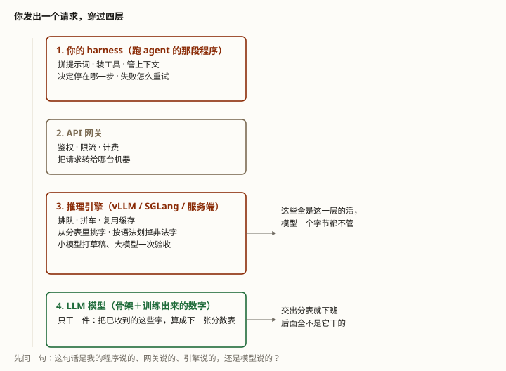

同一段提示词，换个产品行为就不一样了——格式稳不稳、快慢、停在哪，很多不是模型的本事，是外面几层软件干的。
你有没有过这种时刻：把同一段提示词扔进两个不同的产品，一个给你的数据（JSON，程序好读的那种格式）规规矩矩，另一个让你自己修格式。第一反应多半是「后面那个模型不行」。
可格式这件事，恰恰不归模型管。模型只负责给下一个字打分，格式稳不稳是围着它的软件钉住的——钉没钉，差别就是「几乎不出错」和「时不时要你修」。答得对不对、聪明不聪明，才归模型管。
拆穿了就是一句大白话：你看到的每一个行为，背后都是某一层在干活。分清是哪一层，就是这课的全部内容。
学完这课，你能看到一个不对劲的行为，先判断它出自哪一层；也会知道四条跟 agent 直接相关的坑——其中两条的正确修法，根本不在模型身上。
整门课只问一句话：这件事，是哪一层做的？
你发出的一个请求，其实穿过了四层。每层都干自己的活、干完交给下一层。模型只占最里面那一层，而且只干一件很窄的事。
第 0 课说过，训练一个模型，工程师先写「骨架」——几十层怎么摆、每层干什么，然后再开始训练。训练完成，产出一个权重文件：每一层的数字，全在里面（第 6 课压小的就是它）。
但权重文件就是个普通文件：双击不会跑，自己不会回答任何问题。
要让它能用，还得有个配套的软件——这套程序叫推理引擎（inference engine）。它得先做两件事，才轮得到回答问题：① 把权重从硬盘搬进服务器显卡的显存里（显存＝显卡自带的内存，第 2～4 课出现过）；② 启动一个后台服务器，响应你的请求——你的程序跟它打交道的窗口叫接口（API）。这一整套叫部署（deployment）。
以部署 DeepSeek 为例：先下载 vLLM（一个开源推理引擎），再下载 DeepSeek 的权重文件。vLLM 已经内置了 DeepSeek 的算法，所以算法不用你下载、也不用导入。但不是所有引擎都支持所有模型：算法得由引擎自己实现，所以部署前先去引擎的官网确认它支持这个模型。（另外还有几个小文件：config.json，骨架的尺寸表；分词器，字怎么切。）
同一份权重，换一个引擎，行为就不一样——格式稳不稳、快慢、停在哪，都会跟着变，这正是开头那个例子的原因。所以普通人平时说的「大模型」，实际就是权重文件＋推理引擎。
那么，你向模型提一个问题、它回你一段话，中间到底经历了什么？从外到里，是这四层：① 你的程序（行话叫 harness） · ② API 网关 · ③ 推理引擎 · ④ LLM 模型。

逐层点名，看清各自的领地：
| 这一层 | 它真正干的活 |
|---|---|
| 你的程序（harness） 跑 agent 的那段程序 |
拼提示词 · 装上工具 · 管上下文 · 决定什么时候停 · 失败了自己重试。Agent 篇 · 第 8 课讲的就是它 |
| API 网关 服务商门口的"前台" |
验你的身份 · 管你的用量配额（用超了就限流）· 计费 · 决定把你的请求转给哪台机器 |
| 推理引擎 本课的主角 |
排队 · 拼车 · 复用缓存（第 3 课、第 4 课）· 从分表里挑字（第 1 课进阶）· 另有几件新活，第 3、4 节再点名 |
| LLM 模型 骨架＋训练出来的数字 |
只干一件：把已经收到的这些字，算成下一张分数表（每个字打一个分；换算成百分比，就是第 7 课那张概率表）。交出这张表，它就下班了 |
这条边界，第 1 课那张流水图的底色带就钉着：从「查嵌入表」到「原始分」之间是模型，之后换算、挑字、拼字符串，全不是它。模型交出的是一张「哪个字有多少分」的表——至于从这张表里挑哪个字，它说了不算。
平时说的「模型＋外壳」，是解释概念用的分法；真正排查问题，还是按这四层、从外到里逐环节走——先问「这个行为是哪一层干的」，再问「那层归谁管、能改什么」。（两分法为什么不够用，进阶版里细说。）
引擎不是什么神秘的东西。它干的活可以归成四类，前三类你已经学过了：
top_p、top_k、种子，这些旋钮都是它在执行（速查页）。你会发现「同一个模型，两次答案不一样」这件事，根源就在这里：挑字是引擎在动手，而不同引擎的默认值、计算精度、执行顺序都可能不同——本来就没有"必须一模一样"这回事。
第 1 课那张分数表上，模型给整张词表（所有候选字）都打了分。在格式要求严格的场景——比如要输出一个 JSON 字符串供工具解析，像 {"city":"北京"} 这样——大部分字都是"拼下去就废了"的，但它们照样在表上、照样有分数。
「废」有两类。一是语法坏了：模型很可能输出 {"city":"北京} 这样少个引号的，工具解析直接失败。二是语法合法、但不符合要求：比如输出 {"city":"北京","nope":null}，工具能正常解析，但多了个字段，执行照样失败。
让模型输出 JSON 字符串供工具解析，这个功能叫结构化输出（structured outputs）；JSON 对象需要包含哪些字段、每个字段是什么，就是它的 schema（"必须长什么样"的说明书）。引擎的新本事是：在挑字之前，先拿一张语法规则把所有"拼下去会废"的字从表上划掉，只在剩下的里面挑。这一招叫约束解码（constrained decoding）。结构化输出要确保的，就是输出能被正确解析、并符合 schema 的 JSON 字符串。
Anthropic 官方文档的原话是：结构化输出「通过约束解码来保证回答符合 schema」。另一家 vLLM 的文档写得更直白：它的后端就是专门干这个的引擎，作用是「保证输出 100% 的结构正确」。
这里的关键是「保证」两个字。它不是"让模型更小心地写对"，而是在数学上让写错这条路不存在——错字根本没有出现在候选里。Anthropic 也把这句写进了文档：开了之后不会再有 JSON.parse() 的报错（那句报错是程序读不动坏 JSON 时喊的）。
不过它默认是关的。请求里没带 schema、没开结构化输出，就还是普通生成——格式全靠模型自己写，偶尔崩很正常。上面那个「保证」，是打开开关之后的事。（本地部署偶尔还是解析失败，为什么？）
但有一个例外要知道：模型会拒答。拒答就是它按安全规则拒绝回答（问了不该问的事），回你一句「这个我不能答」——这句话优先于格式约束，那次回答照样合法，只是不是你要的形状。所以代码里仍然要检查「我到底有没有拿到数据」，不能假设开了就一定有。
这招也不是免费的：说明书（schema）太复杂会被直接拒掉，所以参数别一口气堆满。（具体代价有哪些？）
另有一件事，属于同一层但方向相反：引擎还能拿一个小模型打草稿、大模型一次验收，以此加快速度——这招叫投机解码（术语表）。它的卖点恰恰是输出一个字都不变，只是快。
这两种招要分清：投机解码只是提速，它承诺输出一个字不变；约束解码是明着改输出——按你的说明书，把不合法的字从候选里掐掉，改成你要的形状。一个不碰答案，一个改答案（经你允许）——别混成一类。（两个能同时开吗？）
前面是地图，这四条是拿地图去排查。每一条的修法都不在模型身上——这是本课最实用的部分。
你在Agent 篇 · 第 1 课学到的流程是：模型说「要调哪个工具、参数是什么」，你的代码去解析它、去执行。Anthropic 文档开头写的就是这个痛点：不开结构化输出，模型会吐出坏 JSON 和不合法的工具参数，让你的程序崩掉——光是提示词写得再仔细也躲不掉。
所以修法不是改提示词、不是换更大的模型，而是让接口帮你把格式钉住（打开结构化输出那一类开关；在哪配）。工具参数也能这么钉（Anthropic 管它叫"严格工具调用"），和结构化输出一起用，就能既要可靠的工具调用，又要可靠的最终答案。
要记住的是：「模型很听话、格式很稳」这个结论，前提常常是接口帮你钉着格式。把它当成模型的功劳，你就找不到修法了。（怎么验它真开着？）
你可能会以为模型自己知道什么时候说完了。不是的。每次回答回来都带一个字段说明「为什么停了」，Anthropic 把它列成一张小表：答完了 · 撞到上限了 · 碰上了你设的停止字 · 要调工具 · 拒答 · 把上下文窗口填满了。
对 agent 来说，其中一条要命：如果撞上限时那份回答里有个没写完的工具调用，那份工具调用是坏的，直接执行会出错。Anthropic 给的处置是把上限调大、重发一次。
也就是说：「工具调用参数不完整」有一种成因不在模型，在引擎那层的上限设置。遇到这类坏调用，先看你给的上限够不够，再去怀疑模型。
接口报错时会给你一个编号。下面的编号口径来自 Anthropic（别家不完全一样），有两种常见，含义完全不同，处置也不同：
还有一条能省你事的：Anthropic 给的工具包（SDK）会自己重试——连接错误、限流、服务端故障这些临时问题，它默认等一会儿重试两次，还会听服务端给的「等多久」提示。所以你手写的那层重试，很可能是在它之上又叠了一遍。
这属于哪一层：429 来自网关（它管配额和花费上限），529 来自引擎（它的机器忙不过来）。模型在这两件事上完全无辜。
第 3 课实测过：只改提示词开头一处，成本差 3.7 倍。同样的道理在快慢上也成立——命中缓存的那次请求，第一个字来得快得多，而这并不是因为模型更快。
所以做对比时有个坑：拿命中缓存的一次和没命中的一次比速度，结论是假的。要比就得两边都命中，或者两边都没命中。
上面这些机制里有三件，脚本做了能直接验证的演示。它只用 Python 自带的功能，离线能跑：
python exercises/llm/0008-who-does-what.py演示一 · 约束解码：造一个玩具场景——合法答案只有三种 JSON，词表里故意混进五个「不听话」的零件。用同一张分表抽 2000 次，只改一个变量：加不加那道语法闸。
同一个模型、同一张分表，抽 2000 次：
不加闸（模型爱挑什么挑什么） 合法 1378 / 2000 不合法率 31.1%
加了闸（引擎每步划掉不合法字） 合法 2000 / 2000 不合法率 0.0%
不加闸时，坏的长这样（从 2000 次里挑前 3 次失败的）：
✗ {null{"nope":}nullnull
✗ {"city":"北京""nope":null}
✗ {"cityy""北京"}{"cityy",null
同一批实验里，成功的长这样：
✓ {"city":"北京"}
✓ {"city":"广州"}
再用真解析器（json.loads）跑一遍，只看两件事：会不会崩、能不能取出字段：
不加闸：解析失败 622 次 解析成功但取不到 city 字段 0 次
加了闸：解析失败 0 次 解析成功但取不到 city 字段 0 次看两处：不加闸时约三成直接是废的；加了闸两千次全部合法。这正是 Anthropic 文档里「不再有解析报错」那句话的意思——不是模型变听话了，是错的选项根本不存在了。
⚠ 那个 31.1% 是脚本手编的分表造出来的，只说明机制、不是任何真实模型的成绩。能当真的是两头：不加闸会漏，加闸不漏。
演示二 · 投机解码：造两个玩具模型（大模型给真答案，小模型只在两个位置上猜错），然后数大模型被叫了几次，并逐字比对两次的输出。
大模型被叫的次数：
老实一个个问（基线） 13 次
小模型打草稿 + 一次验一批 3 次
省下 77%
两次输出逐字一样吗？ 一样 ✓
基线： 今天天气不错，我建议带把伞，出门方便。
投机： 今天天气不错，我建议带把伞，出门方便。真正该看的不是「省下 77%」（那是玩具规则造出来的，不是真实加速倍数），而是那行「一样 ✓」——引擎加速了，一个字都没变。
演示三 · 凑批会改答案：显卡算的是小数，而小数加法换个顺序，末位就可能不一样（行话叫"浮点加法不满足结合律"）：
(0.1+0.2)+0.3 = 0.60000000000000008882
0.1+(0.2+0.3) = 0.59999999999999997780
差 1.110e-16 （完全正常，浮点本来就这样）
而显卡能分辨的最小刻度，是这个：
一个「刻度」(1 ulp) = 1.776e-15
候选甲 = 10.00000000000000000
候选乙 = 10.00000000000000178
打印出来长得一模一样，但它们是两个不同的数，甲 < 乙。凑批会改变「谁跟谁先加」：你独自一批是一种分法，旁边挤进来八个人是另一种分法。所以只要两个候选字的分数咬得比一个刻度还紧，「谁的分高」就由末位说了算——而末位会被凑批的方式改变。
这不是脚本编的巧合，vLLM 自己的文档里就有专讲这件事的一节，明说批大小的变化可能让分数（行话叫 logprob）变化，进而让同一个请求的输出不同。又一条本该在「引擎」名下记账的现象。
Q1 同一段提示词，两个产品一个给出的 JSON 规规矩矩、另一个老要你修格式，最可能的原因是？
Q2 工具调用返回的参数不合法、你的 agent 直接崩了，最该先试哪一步？
Q3 模型交出那张分数表之后，挑字这一步是谁在执行？
Q4 工具调用少写了一半、参数不完整。已知引擎有个输出上限，先该怀疑什么？
Q5 服务商回 529「暂时过载」，最接近真相的说法是？
JSON.parse() 报错」；「把 JSON schema 编译成一份语法来约束输出」；工具参数也能这么钉（Strict tool use）；首次用某 schema 会多花时间编译 · 编译结果按 24 小时缓存 · 改 schema 会重编、并让这一轮对话的前缀缓存作废；schema 太复杂会返回 400「编译不出来」，另有 180 秒兜底超时。
前置：LLM 底层 · 第 7 课 · 蒸馏（模型侧的事）· LLM 底层 · 第 4 课 · 一趟装满的卡车（引擎干的活之一）
相关：LLM 底层 · 第 3 课 · KV Cache 与「缓存命中」（引擎干的活之二）· LLM 底层 · 第 1 课 · 从「token」到「下一个 token」（模型那层的边界）
你会用到：Agent 篇 · 第 1 课 · 工具调用（本课第 ① 条的落点）· Agent 篇 · 第 8 课 · Harness（四层里最上面那层）· 上下文管理那一节（缓存那笔账）
这条轨道到此为止：回课程目录看另外三条轨道。
术语表：推理引擎 inference · 约束解码 / 结构化输出 · 投机解码 · 停止原因 stop reason